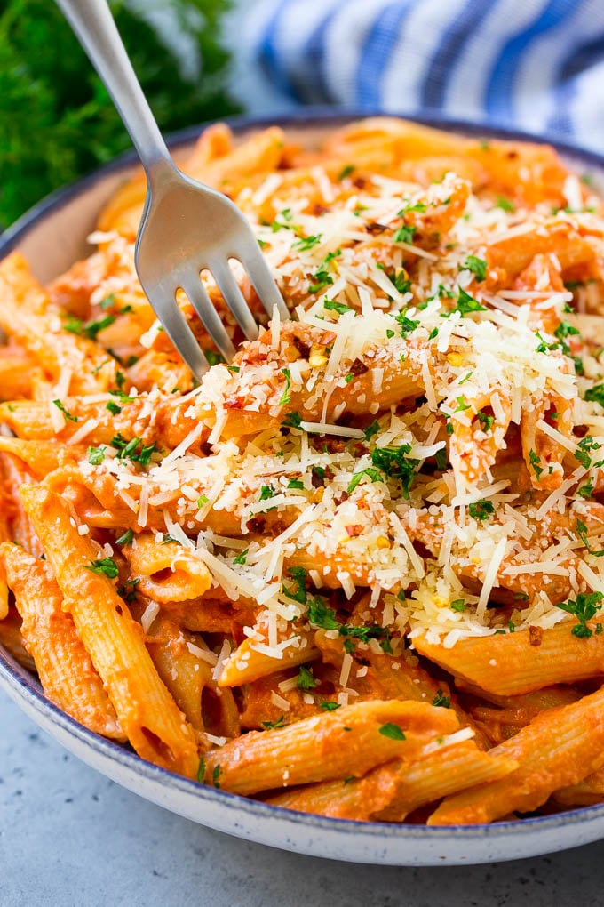

Penne A La Vodka

Description
This penne alla vodka is tender penne pasta tossed in a rich and delicious tomato, vodka and cream sauce. Add a sprinkling of parmesan cheese and you’ll have a restaurant quality meal in the comfort of your own home.
Ingredients
- 16 ounces penne pasta
- 2 tablespoons butter
- 2 teaspoons garlic
- 1/2 teaspoon crushed red pepper flakes plus more for garnish if desired
- 28 ounce can Italian style or San Marzano whole tomatoes
- 1/4 cup vodka
- 1 cup heavy cream
- 3/4 cup grated parmesan cheese
- salt and pepper to taste
- 2 tablespoons chopped parsley
Steps
- Cook the pasta in salted boiling water according to package directions.
- While the pasta is cooking, prepare the sauce.
- Melt the butter in a large pan over medium heat. Add the garlic and red pepper flakes and cook for 30 seconds.
- Place the tomatoes in a blender or food processor and puree until smooth. Pour the tomato puree into the pan.
- Add the vodka to the pan. Simmer the sauce for 10 minutes over medium low heat.
- Stir in the heavy cream and parmesan cheese and simmer for another 5 minutes or until thickened. Season the sauce with salt and pepper to taste.
- Pour the sauce over the pasta and toss to coat. Sprinkle with parsley, parmesan cheese and red pepper flakes (optional), then serve.
Home